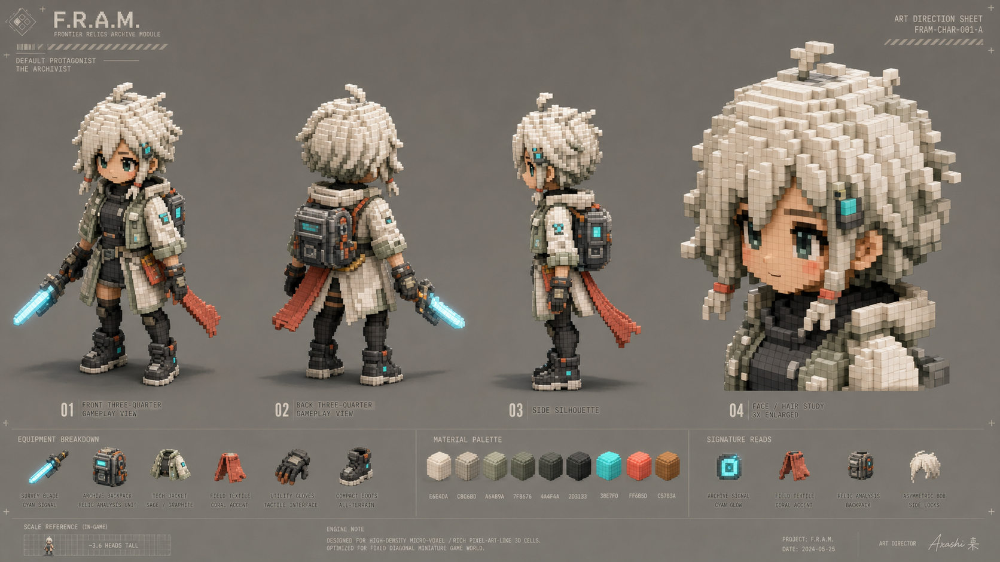
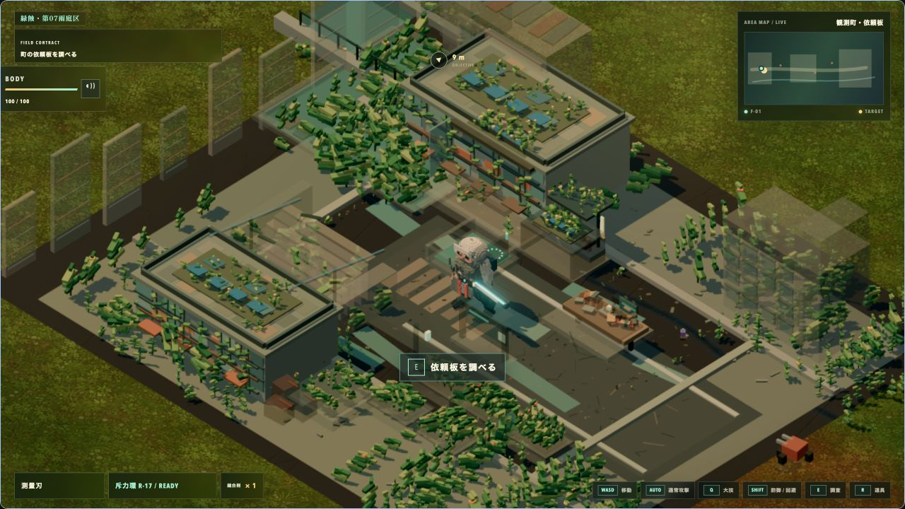

F.R.A.M. R08 — selected character direction / browser implementation
Selected direction — layered bob, pale short jacket, graphite body, cyan archive signal

R08 browser capture — 1,280 × 720 / active gameplay / 19,221 visible cells
R07 baseline — face and jacket overlays on inherited body

R08 result — unified hair, face, jacket, limbs, boots and archive pack
R07 focused crop — inherited column silhouette remains
R08 focused crop — coherent bob, pale shoulder mass, articulated limbs
The direction sheet is a character-spec view, not the gameplay camera. R07 and R08 are the normalized same-viewport comparison.